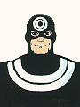

|
Introduction
Comics
Information
Allies
Villains
Animated Series
Movies
Photo Gallery
Video Games
As A
Whole
|
Villains in
Bullseye
Gladiator
Kingpin
|  |
Bullseye
Name: unknown
AKA:
Benjamin Pondexter
Height: 6'0" (183cm); Weight: 200 lbs.
(91 kg.)
Hair: blonde; Eyes: blue
First
appearance: Daredevil #131 (Mar 1976) |
Known relatives: none
Occupation: Assassin,
former mercenary, former baseball pitcher
Powers/abilities:
uncanny ability to use anything as a weapon, uncanny aim, also skilled at
hand-to-hand combat, adamantium skeletal implants
Special
equipment: knives, shuriken, sais, anything that can be thrown, Kevlar
body suit
Source of powers: unknown
Important allies:
none (has worked for Kingpin)
Important enemies: Daredevil,
Elektra, Capt. America, Crossbones
|
|
Bullseye is insane. He is a sociopathic, psychopathic,
sicko! He had a brain tumor at one point which had him hallucinating that
everyone was Daredevil, but whether or not the brain tumor was part
of the cause of his aberrent behavior may never be known. He can turn
anything into a weapon, and has unnaturally superb aim. One of the best
assassins in the world, he couldn't beat Daredevil. In fact, with one
exception, every time Daredevil and Bullseye have fought, DD has come out
on top. Bullseye has developed a major hate for DD (I think mostly because
of this losing streak). It's almost as if he goes into a confrontation
with DD already saying, "You always beat me! It's not fair!"
Very little is known about his background. There was a mention
somewhere about his being in the military and also possibly a ballplayer??
Daredevil ended up dropping him and paralyzing him once, but after some
combination high tech and oriental medicine (not to mention an infusion of
unbreakable adamantium into his bones), he got better. This is someone you
don't want to be in the same city with.
Note: Bullseye is often listed as having his first appearance in
Nick Fury #15 (1969). From everything I can tell, this is a completely
different character with a different origin & abilities.
|
|
Gladiator
Real Name: Melvin
Potter
AKA:
Height: 6'8" (203 cm); Weight: 300
lbs. (136 kg.)
Hair: bald (black mustache); Eyes:
blue
First appearance: Daredevil #18 (Jul 1966) |
Known relatives: Betsy Beatty Potter
(wife)
Occupation: Costume
maker/designer
Powers/abilities: hand-to-hand combat, talented
costume designer
Special equipment: Gladiators armored suit and
whirling titanium wrist blades
Source of powers: not
applicable
Important allies: Daredevil, Elektra; former: Masked
Marauder, Electro, Stilt-Man, Death-Stalker, Beetle, Big M, Matador,
Leap-Frog
Important enemies: none; former: Daredevil, Iron Man,
the Hand
Gladiator started off as a strong man seeing that people only got ahead
when they took what they want and why should all those super heroes have
all the glory anyway. A talented costume designer, he put together an
outfit with very nasty wrist blades, to go out and conquer with. After
some time, apparently he saw the world as an arena and his fights as
contests in the old Roman style. [Personally I liked his initial
motivations better than this "fantasy world" he supposedly ended up living
in.] He got some counseling from his wife-to-be Betty Beatty and nowdays
is a friend of Daredevil's. His wife means everything to him, and at one
point Daredevil helped rescue her when she'd been kidnapped to try to
force Gladiator back into a life of crime. |
|
Kingpin
Real Name: Wilson Grant Fisk
(middle name from DD v.2 #15)
AKA: The Kingpin of
Crime
Height: 6'0" (183 cm); Weight: 500 lbs. (227
kg.)
Hair: bald; Eyes: brown
First appearance:
Amazing Spider-Man #50 (Jul 1967) |
Known relatives: Vanessa Fisk (wife); Richard Fisk
(aka The Rose, son);
Occupation: Head of Crime
Syndicate
Powers/abilities: highly skilled at hand-to-hand
combat
Special equipment: walking stick/cane equipped with
various charges
Source of powers: not applicable
Important
allies: organized crime in general (more out of fear than
loyalty)
Important enemies: Daredevil, Spider-Man, The Rose, The
Punisher
While Mr. Fear might be the most obvious choice for arch-nemesis for
the "Man Without Fear", the Kingpin is the best arch-enemy for Daredevil
when you look at his beliefs and values. While Matt Murdock holds justice
and the rights of the individual to be paramount, Wilson Fisk sees the
whole world as one big game, a system to be manipulated, and the
"individuals" are no more than game pieces to be toyed with or disposed of
without any further thought. The Kingpin's only weakness used to be his
wife Vanessa for whom he'd do almost anything. It's interesting to note
that at one point he was going to retire from crime to the life of a spice
merchant, but this all fell apart when Vanessa was kidnapped coming to
engage the services of Nelson and Murdock to help the Kingpin legitamitize
his affairs. Ironic that later, Murdock and the Kingpin would become such
bitter enemies. At first, the Kingpin never even noticed Daredevil as
anything other than a minor annoyance, but shortly after he discovered
Daredevil's identity, he decided that he wanted to "break" the man called
Matt Murdock. He destroyed Matt's life in every way and was going to kill
him, but Matt survived. Daredevil became an obsession of the Kingpin's
after this. In fact, "Daredevil" was one of the only things that could
break the Kingpin's cool, calm, collected outlook. Daredevil then proceed
to tear down the Kingpin's empire and the Kingpin wandered homeless for a
while, although there have been hints in the Marvel Universe that he may
be coming back!
While people often refer to the Kingpin as the "fat man", he isn't. He
is solid as they come, and deceptively fast for his size. He tends to
scatter the best fighters as if they were bowling pins. However, as far as
I'm aware he has no "super powers". |
RETURN TO DAREDEVIL'S INTRODUCTION PAGE
|